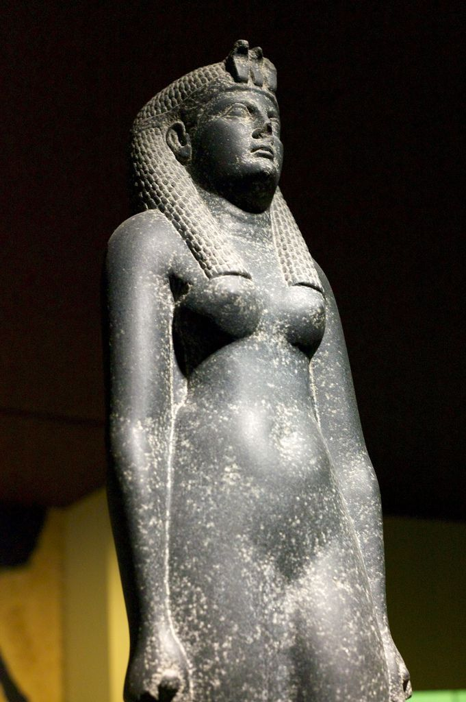

Cleopatra was one of the few if not the only female pharaoh of Ancient Egypt and ruled from 51 to 68 BCE. She was an incredibly powerful character who during her relation with Caesar controlled most of the Mediterranean, she rebuilt the economy of her country and created trade routes across her empire. During the era she ceased control Egypt was to the say the least far removed from the days where the pyramids were built.
Cleopatra’s portraits and artwork depend heavily upon the time of her rule as well as the intended audience. For instance artwork intended to be seen by Roman citizens emphasizes more of her Greek features. By contrast in Egypt you will frequently see artwork which has more of an emphasis on Egyptian characteristics such as the headdress. The left image is a coin minted in Rome while the statue is more of an Egyptian construction.

Cleopatra is perhaps best known for when she snuck into the palace where Caesar was located while dressed in her finest clothing. Consider where Cleopatra was at this point. She was losing a war against her brother and for the most part was powerless
to stop her eventual fate and death. When she met Caesar she was able to persuade him to support her against her brother who eventually drowned in the ensuing civil war. Through the use of her sexuality she convinced Caesar to support the weaker
side in the war. Cleopatra in order to protect her power later sided with Anthony.
The image on the right is a painting depicting Cleopatra sneaking into the palace in a bedroll to see Caesar. We see her dressed in her finest wear even if it is a bit scant. Caesar in his older age seems genuinely surprised and if you look perhaps a little impressed. Cleopatra’s attire leans one to believe that she is using her sexuality to convince Caesar to support her in her conflict. This is further reinforced by where her eyes looking and it’s not his eyes. Perhaps it is an artistic choice, but when you look closely at the palace walls you see the place is a little worn while Caesar is sitting at a fine wood table. This almost implies that Caesar is a power figure.